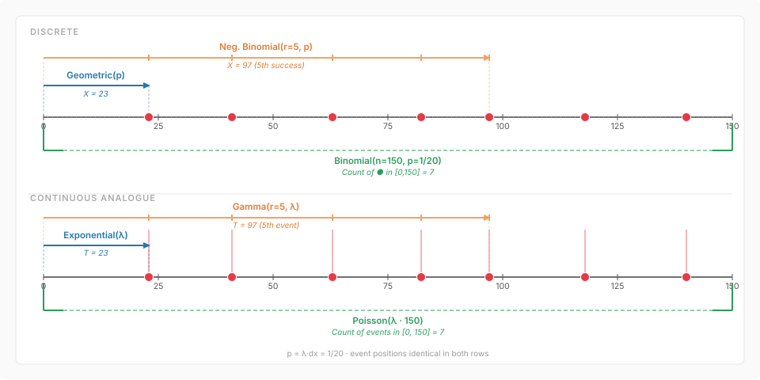

From Bernoulli Trials to the Poisson Process
A unified picture of discrete and continuous distributions
1 The fundamental construction
Take a long axis and chop it into bins of width \(dx\). In each bin, run an independent Bernoulli trial with success probability \[ p = \lambda \, dx. \] That is the whole story. Every classical distribution in this family is just a different question asked about this same random experiment.
When \(dx = 1\) the bins are unit intervals and \(p = \lambda\): we are in the discrete world. When \(dx \to 0\) with \(\lambda\) fixed, the grid dissolves into a continuum and we enter the continuous world. The parameter \(\lambda\) is the rate — the expected number of successes per unit length of axis — and it is the one quantity that survives the passage to the limit.

2 The four questions
2.1 One bin: Bernoulli and the infinitesimal indicator
The simplest question is: did a single bin produce a success?
In the discrete case (\(dx = 1\)) this is a \(\text{Bernoulli}(p)\) random variable. In the continuous limit, a bin \([x,\, x + dx]\) produces a success with probability \(\lambda \, dx\): it is the indicator of an infinitesimal event, the atom from which everything else is built.
2.2 Waiting time to the first success: Geometric and Exponential
How many bins do we need to scan before seeing the first success?
In the discrete case this count follows a \(\text{Geometric}(p)\) distribution. Its PMF is \[ P(X = k) = (1-p)^{k-1} p, \qquad k = 1, 2, \ldots \] and its mean is \(1/p = 1/\lambda\) (since \(p = \lambda \cdot 1\) for \(dx=1\)).
In the continuous limit the waiting time to the first event follows an \(\text{Exponential}(\lambda)\) distribution, with PDF \[ f(t) = \lambda e^{-\lambda t}, \qquad t \geq 0. \] The mean is again \(1/\lambda\).
The link is the memoryless property: both distributions satisfy \[ P(X > s + t \mid X > s) = P(X > t), \] and in fact the Geometric and Exponential are the only distributions with this property in their respective settings. As \(dx \to 0\), \[ P(X > t) = (1 - \lambda\,dx)^{t/dx} \longrightarrow e^{-\lambda t}, \] which is exactly the Exponential survival function.
2.3 Waiting time to the \(r\)-th success: Negative Binomial and Gamma
How many bins until we accumulate \(r\) successes?
In the discrete case this is the \(\text{Negative Binomial}(r, p)\) distribution. It can be seen as the sum of \(r\) independent \(\text{Geometric}(p)\) variables, and its mean is \(r/p = r/\lambda\).
In the continuous limit, the waiting time to the \(r\)-th event follows a \(\text{Gamma}(r, \lambda)\) distribution, with PDF \[ f(t) = \frac{\lambda^r}{\Gamma(r)}\, t^{r-1} e^{-\lambda t}, \qquad t \geq 0. \] It is the sum of \(r\) independent \(\text{Exponential}(\lambda)\) variables, with mean \(r/\lambda\).
The analogy is exact: Negative Binomial is to Geometric as Gamma is to Exponential. Both describe the accumulated waiting time for \(r\) events; only the granularity of the clock differs.
2.4 Count of successes in a fixed window: Binomial and Poisson
How many successes fall in a fixed interval \([0, n]\)?
In the discrete case, scanning \(n\) bins each with success probability \(p\) gives a \(\text{Binomial}(n, p)\) count. Its mean is \(np = n\lambda\) (for \(dx = 1\)).
In the continuous limit, the count of events in \([0, t]\) follows a \(\text{Poisson}(\lambda t)\) distribution, with PMF \[ P(N_t = k) = \frac{(\lambda t)^k e^{-\lambda t}}{k!}, \qquad k = 0, 1, 2, \ldots \] This is the classical Poisson limit of the Binomial: as \(n \to \infty\) and \(p \to 0\) with \(np = \mu\) fixed, \[ \binom{n}{k} p^k (1-p)^{n-k} \longrightarrow \frac{\mu^k e^{-\mu}}{k!}. \] The mean and variance both equal \(\mu = \lambda t\), reflecting the independent-increment structure of the Poisson process.
3 Summary table
| Question | Discrete (\(dx=1\), \(p=\lambda\)) | Continuous (\(dx \to 0\), \(p = \lambda\,dx\)) |
|---|---|---|
| One bin | \(\text{Bernoulli}(p)\) | infinitesimal indicator |
| Time to 1st event | \(\text{Geometric}(p)\) | \(\text{Exponential}(\lambda)\) |
| Time to \(r\)-th event | \(\text{Neg. Binomial}(r, p)\) | \(\text{Gamma}(r, \lambda)\) |
| Count in \([0, n]\) | \(\text{Binomial}(n, p)\) | \(\text{Poisson}(\lambda n)\) |
4 The Poisson process
The continuous column is not just a list of distributions: it is a single object, the Poisson process of rate \(\lambda\). Its defining properties are:
- Independent increments. Counts in disjoint intervals are independent.
- Stationary increments. The distribution of \(N_{s+t} - N_s\) depends only on \(t\), not on \(s\).
- Rare events. The probability of two or more events in \([t, t+dx]\) is \(o(dx)\).
From these axioms alone one can derive that inter-arrival times are i.i.d. \(\text{Exponential}(\lambda)\), that the time to the \(r\)-th arrival is \(\text{Gamma}(r, \lambda)\), and that counts over any interval of length \(t\) are \(\text{Poisson}(\lambda t)\) — recovering the entire right column of the table from a single process.
The discrete column is the same process, simply run on a coarser clock.